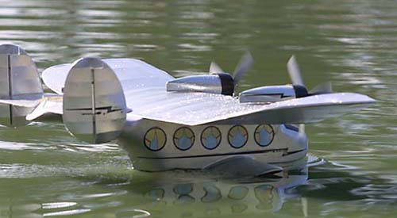

The B-314 Lazy Clipper got another try this morning. I have repaired all the wing damage sustained in 1996 and reworked a few other details.
|
The elevator was lifted about 1/2" at the leading edge to help counter the violent pitch up previously noted. The battery got 4 more cells, from 14 to 18, and the 3.8:1 Leisure gear boxes were replaced with the Astro 4.36:1 super boxes. Current draw went from 19 amps at full throttle to about 22. It weighed around 6 pounds.
|
Taxi trials this morning indicated that the stab incidence increase was probably a little extreme. I could force the model up on the step, but it was difficult. The model wanted to plow through the water, or perhaps even submerge the nose a little. This had not been the case at all on previous attempts.
|
Yaw excursions were still excessive, and I am now considering mocking up a new pair of vertical surfaces with 50-75% more area.
|
Further updates will be made as appropriate.
| |
Copyright 2001, Thayer Syme. All rights reserved